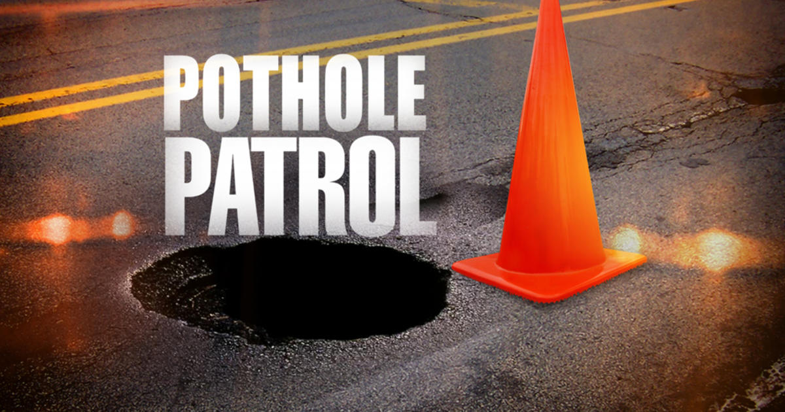

Hitting a pothole is something everyone tries to avoid. Pot Patrol is here to improve your community, save someone’s life & wallet. A team of three individuals have came up with the idea to eliminate potholes, essentially decrease accidents, people’s car expenses & save lives. Simply done by creating this site where people will send in reports of the potholes seen. Driver or pedestrian, take a minute, snap a picture and send in the report. With our image recognition feature, the size of the pothole will automatically be determined and prioritized to be fixed based on its severity. Our goal is to improve the neighborhood roads ...
Spotted ... Reported ... Fixed.